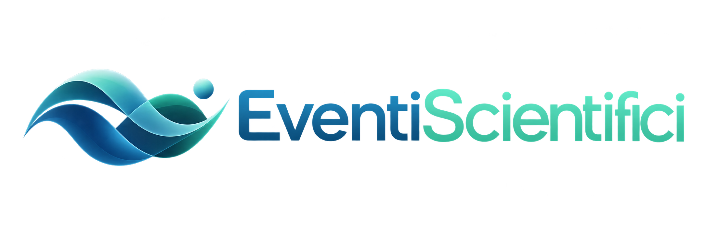

Patient Based — Continue Applied Research
Prima del sistema,
una persona.
Ogni misura, ogni evento, ogni esito appartiene a qualcuno. Il sistema esiste perché esiste una traccia — e quella traccia è una vita.
dal caos emerge una tracciascorri — il sistema si svela un elemento alla volta
Il nome
resta fuori.
La parte economica sa chi sei. La parte clinica conosce ciò che accade nella cura. Le due informazioni non vengono fuse nello stesso luogo.
GiuliaFerri
Dopo la separazione, ciò che conta scorre
La misura,
non la dichiarazione.
Una dichiarazione è una frase. Una misura è una sequenza osservabile: giorni, eventi, aderenza, interruzioni, esiti.
il percorso non si racconta — si osservapseudonimizzato · nel tempo
Ciò che accade nella cura passa da una fiducia
La connessione
ti appartiene.
Un professionista può chiedere accesso. Solo la persona decide. Ciò che viene revocato non si riapre da solo.
l'accesso si concede — e si ritirala persona decide, il sistema obbedisce
Articolo 32 — tutela legale del paziente
Un diritto, quando serve,
diventa evento.
«La Repubblica tutela la salute come fondamentale diritto dell'individuo.» — Costituzione Italiana, art. 32
- cure negate o ritardateassistenza legale
- accesso urgente a terapie e diagnosiricorsi
- ASL · INPS · INAIL · ospedaliazioni legali
- minori, disabili, anzianipazienti fragili
- cure fuori regione o all'esterosupporto
- LEA e liste d'attesaverifica adempienza
la promessa diventa un fatto datatoassegnazione · presa in carico · erogazione
Tracce separate, mai fuse
Molte vite,
una conoscenza.
Le tracce restano pseudonimizzate e separate. Sotto soglia non si osserva nulla: da cinque, il campo produce un pattern condiviso — osservazione, ipotesi, valutazione umana.

l'ambiente si chiama FarmaCOmmda qui nasce ciò che si condivide
Enzima — il dipartimento R&S di PB-CARe
L'osservazione
torna domanda.
un ciclo, non una lineaciò che ritorna riapre l'osservazione
Ciò che hai attraversato ha una struttura
Adesso lo riconosci:
è un sistema.
ogni cosa è già passata dal suo livelloruoli diversi, profondità diverse — un solo coordinamento
tutto ciò che hai attraversato
Una persona. Un percorso. Un sistema.
questo è PB-CARePatient Based — Continue Applied Research
PB-CARe · il principio che regge tutto
La misura al posto della dichiarazione.
La prescrizione è un evento verificabile. L'aderenza si conta in giorni reali. Gli esiti emergono nel tempo. Ogni dato nasce strutturato — e serve la cura e la ricerca insieme.
PB-CARe srl · P.IVA 07242090822